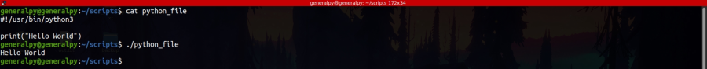
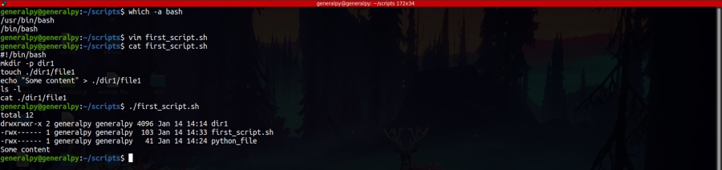

Shebang is a special line at the beginning of any script which is helpful when running that script by its name alone.
Shebang instructs the shell to use interpreter specfied in it. Interpreters of different programming lanugages can also be specified.
If no shebang line is present, shell will use the defualt interpreter of the user.
Syntax of shebang is :
#!path_to_interpreterLet's run a python file without using the python3 command.

We wrote python path in shebang and then executed the file without actually writing the python3 command.
It is a good practice to always include shebang line in starting of a bash script. Default bash path is /bin/bash.

Our script ran as before because bash is defualt interpreter for the system I am using so bash was used as defualt.
Comments are pieces of script which are ignored by the interpreter. Anything after the # is a comment in bash except the shebang line.
It is advised to use comments to improve readability of the script.